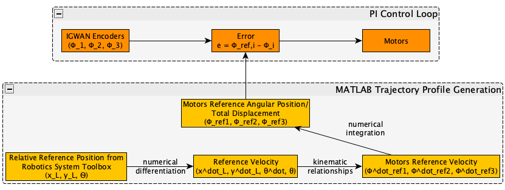

PI Deep Dive¶
Note
Looking for the function documentation? See PIMoveTo.
In this section the process for developing the PI controller is detailed. This includes deriving the kinematic relationships and creating trajectory profiles.
Motivation¶
A PI controller was choosen to be implemented due to…
Derivation¶
Note
The derivation presented is a summary of the work by T.A. Baede, Motion control of an omnidirectional mobile robot (2006).
Essential to any advanced PID controller, the kinematic relationships and control laws were developed for a tri-omni wheel robot.
Kinematic Relationships¶
First, the robot’s location and heading with respect to the course’s frame is defined as \((x, y, \theta)\). Additionally, the robot’s velocity with respect to the course’s frame is defined as \((\dot{x}, \dot{y}, \dot{\theta})\). With respect to the robot’s frame, the angles for wheels 1, 2, and 3 are \(a_1=0^\circ\), \(a_2=120^\circ\), and \(a_3=240^\circ\) respectively.
Next, the translational velocity of each wheel, \(v_i\) that make up the robot’s velocity can be split into its components:
\(v_i = v_{trans, i} + v_{rot}\tag{1}\label{eq:1}\)
Looking at \(v_{trans, i}\), we can map the vector onto \(\dot{x}\) and \(\dot{y}\) leading to the general equation for translation at each wheel:
\(v_{trans, i} = -\sin(\theta+a_i)\dot{x}+\cos(\theta+a_i)\dot{y}\tag{2}\)
Now consider the case were the robot only performs a rotation. Each wheel’s translational velocity, \(v_{rot}\), will have to be the following:
\(v_{rot}=R\dot{\theta}\tag{3}\)
where \(R\) is the radius from the center of the robot to the wheels. Note that each wheel will have the same equation as \(R\) is the same for all wheels. The value of \(R\) for our robot was measured to be 0.0869 meters.
Substituting the equations for \(v_{trans, i}\) and \(v_{rot}\) into the equation \(\eqref{eq:1}\), the following equation is created:
\(v_i=-\sin(\theta+a_i)\dot{x}+\cos(\theta+a_i)+R\dot{\theta}\tag{4}\label{eq:4}\)
This equation transforms the robot’s velocities into the translational velocity of each wheel. However, we can also relate the robot’s velocities into the angular velocity of each wheel as translational velocities are directly related to angular velocities:
\(v_i=r\dot{\phi_i}\tag{5}\label{eq:5}\)
where \(r\) is the radius of the wheels, measured to be 0.027 meters.
Substituting \(\eqref{eq:5}\) into \(\eqref{eq:4}\) and rearranging to solve for \(\dot{\phi}\), we get:
\(\dot{\phi}_i=\frac{1}{r}(-\sin(\theta+a_i)\dot{x}+\cos(\theta+a_i)+R\dot{\theta})\tag{6}\label{eq:6}\)
Converting \(\eqref{eq:6}\) from global coordinates to local coordinates is out-of-scope of the documentation (see Baede’s paper). However, the end result is the following equation for each wheel’s angular velocity given the robot’s velocities and steering in the local frame, defined as \([x_L, y_L]\):
\(\dot{\phi}_i=(-\sin(\theta+a_i)\cos(\theta)\dot{x}_L+\cos(\theta+a_i)\cos(\theta)\dot{y}_L+R\dot{\theta})/r\tag{7}\label{eq:7}\)
Control Laws¶
When controlling a robot, we will have an idea of the movement it should perform, called the reference movement. However, simply using \(\eqref{eq:7}\) to find the angular velocities of each wheel and setting each motor to the respective percent values will not suffice. This is because of effects such as friction and motor powers not being equivalent or consistent. Thus, it is neccessary to produce control laws to use for a feedback loop.
We can use \(\eqref{eq:7}\) to produce reference angular velocities of each wheel, \(\dot{\phi}_{ref,i}\), and through integration can also create reference angular positions of each wheel, \(\phi_{ref,i}\).
It was choosen to use a position controller as converting from encoder counts directly to angular postion is more likely to be more accurate rather than having to estimate an average velocity during program execution.
Control actions is calculated based on the difference between reference angular positions and actual angular positions:
\(e=\phi_{ref,i}-\phi_i\tag{8}\)
\(e\) is the tracking error. Note that the units for \(e\), \(\phi_{ref,i}\), and \(\phi_i\) are radians.
For use in a program, the discrete form of the PID control law is implemented:
\(u_k=K_pe_k+K_i\Delta T\sum_{j=1}^k e_j+\frac{K_d} {\Delta T}(e_k-e_{k-1})\tag{9}\)
\(u\) |
Control signal |
\(k\) |
Control loop iteration |
\(K_p\) |
Proportional constant |
\(K_i\) |
Integral constant |
\(K_d\) |
Derivative constant |
\(e\) |
Tracking error |
\(\Delta T\) |
Time between interations |
Note that for the final control loop, the derivative term was not implemented as it was found to be not neccessary.
Implementation¶
With the mathematical concepts defined, the code implementation can be constructed. Below is a flowchart of the implementation.
Trajectory profiles¶
To represent the reference angular positions, pre-generated trajectory profiles are generated for every movement. This is because the RPS has a large delay that negatively impacts the accuracy of the error, especially as the robot moves. To solve this, trajectory profiles are generated in MATLAB, using the code shown in Trajectory Profile Generation. Then the Proteus will read the profile file in the SD card, and store the reference values in an 2D array, which will be compared to in real time. Each trajectory profile outputted has the same format:
1 2 3 4 5 | 0.000000 0.000000 0.000000 0.000000 0.000000 0.000000
0.051794 0.051794 0.103589 -1.035885 -1.035885 2.071770
0.192379 0.192379 0.384757 -1.775803 -1.775803 3.551606
0.392157 0.392157 0.784313 -2.219754 -2.219754 4.439508
0.621531 0.621531 1.243062 -2.367738 -2.367738 4.735475
|
From left to right, the columns are wheel 1’s, wheel 2’s, and wheel 3’s refererence total angular displacement, and wheel 1’s, wheel 2’s, and wheel 3’s refererence angular velocity. Although we only use total angular displacement to determine error, reference angular velocity is used to help decide which direction to wheels should spin in response to error as encoder counts can only increase.
To generate the reference values, the desired \(x_L\), \(y_L\), and \(\theta\) displacement values are first set along with their respective time stamps:
wpts = [0 0.5; 0 0.2; THETA THETA];
The above code sets the waypoints in a matrix, in the form [\(x_1~x_2 ... x_n\); \(~y_1~y_2 ... y_n\); \(~\theta_1~\theta_2 ... \theta_n\)] with the first waypoint always having 0 as the x and y values. It also sets the final waypoint 0.5 meters in the positive x and 0.2 meters in the positive y, with respect to the robot’s local frame. THETA can defined to be the offset of motor 1 from the local \(x_L\) axis. For our robot, THETA was defined as \(\pi/6\) such that motors 1 and 2 would move the robot forward. An offset can also be added to the \(\theta\) waypoint values so that the local frame of the robot can be rotated. For example, if the way points were:
wpts = [0 0.5; 0 0.2; THETA+pi/2 THETA+pi/2];
Then the robot’s local frame (with it’s x and y axis) is rotated 90 degrees counter-clockwise.
Next, the timestamps need to be set for each waypoint:
tpts = [0, 2];
tvec = 0:0.1:2;
tpts stores the timestamp in seconds for each waypoint. The first time
is aways zero, and each waypoint must have it’s own timestamp. I.e, for
\(n\) waypoints in wpts, there must be \(n\) timestamps in tpts.
tvec stores the overall update rate of the trajectory profile and also
the PID control loop. In the example above, there will be a reference value
ever 0.1 seconds. Note that both tps and tvec must end with the same
time value.
The displacement and timestamp values are passed into cubicpolytraj, part
of the Robotics System Toolbox, which produces a cubic trajectory profile.
We’re specifically interested in the reference positions and velocities,
stored in q and qd respectively.
The kinematic relationship defined previously in equation \(\eqref{eq:7}\) is used to convert the generated reference velocities into reference angular velocities for each wheel:
phiVel1 = (-sin(q(3,:)+MOTOR_ANGLE_1).*cos(q(3,:)).*qd(1,:)+cos(q(3,:)+MOTOR_ANGLE_1).*cos(q(3,:)).*qd(2,:)+R.*qd(3,:))/r;
phiVel2 = (-sin(q(3,:)+MOTOR_ANGLE_2).*cos(q(3,:)).*qd(1,:)+cos(q(3,:)+MOTOR_ANGLE_2).*cos(q(3,:)).*qd(2,:)+R.*qd(3,:))/r;
phiVel3 = (-sin(q(3,:)+MOTOR_ANGLE_3).*cos(q(3,:)).*qd(1,:)+cos(q(3,:)+MOTOR_ANGLE_3).*cos(q(3,:)).*qd(2,:)+R.*qd(3,:))/r;
Now to convert the reference angular velocities into reference total angular displacment, numerical integration is performed using the following approximation based on the trapezoidal rule:
\(\phi_{ref}[i]=\phi_{ref}[i-1]+\frac{\Delta T}{2}(\dot{\phi}_{ref}[i]+\dot{\phi}_{ref}[i-1])\tag{10}\)
This formula is implemented in MATLAB as:
phiRef1(1) = 0;
phiRef2(1) = 0;
phiRef3(1) = 0;
for i=2:length(phiVel1)
phiRef1(i)= phiRef1(i-1)+abs((DELTA_T/2)*(phiVel1(i)+phiVel1(i-1)));
phiRef2(i)= phiRef2(i-1)+abs((DELTA_T/2)*(phiVel2(i)+phiVel2(i-1)));
phiRef3(i)= phiRef3(i-1)+abs((DELTA_T/2)*(phiVel3(i)+phiVel3(i-1)));
end
Note that the initial total angular displacement is always set to 0. Also note the addition of an absolute value to the implementation. This is because encoder counts only can increase in our hardware, thus making the actual angular displacements always positive.
The reference total angular displacement values are then written to the output file
fileID = fopen(FILE_NAME,'w');
for i=1:length(phiRef1)
fprintf(fileID, '%f\t%f\t%f\t%f\t%f\t%f\r\n', abs(phiRef1(i)), abs(phiRef2(i)), abs(phiRef3(i)), phiVel1(i), phiVel2(i), phiVel3(i));
%fprintf(fileID, '%f\t%f\t%f\n', abs(phiRef1(i)), abs(phiRef2(i)), abs(phiRef3(i)));
end
which results in a output with format of the example trajectory profile shown above.
PI function¶
For your convenience, the code for the PID function is shown here:
Show/Hide PID Function Code
1 2 3 4 5 6 7 8 9 10 11 12 13 14 15 16 17 18 19 20 21 22 23 24 25 26 27 28 29 30 31 32 33 34 35 36 37 38 39 40 41 42 43 44 45 46 47 48 49 50 51 52 53 54 55 56 57 58 59 60 61 62 63 64 65 66 67 68 69 70 71 72 73 74 75 76 77 78 79 80 81 82 83 84 85 86 87 88 89 90 91 92 93 94 95 96 97 98 99 100 101 102 103 104 105 106 107 108 109 110 111 112 113 114 115 116 117 118 119 120 121 122 123 124 125 126 127 128 129 130 131 132 133 134 135 136 137 138 139 140 141 142 143 144 145 146 147 148 149 150 151 152 153 154 155 156 157 158 159 | void PIMoveTo(char* fName, int size, bool preload) {
/* Set important variables */
int countNew1 = 0;
int countNew2 = 0;
int countNew3 = 0;
int countOld1 = 0;
int countOld2 = 0;
int countOld3 = 0;
float displacement1 = 0.0;
float displacement2 = 0.0;
float displacement3 = 0.0;
float refSpeed1;
float refSpeed2;
float refSpeed3;
float phiVel1 = 0.0;
float phiVel2 = 0.0;
float phiVel3 = 0.0;
float phi1 = 0.0;
float phi2 = 0.0;
float phi3 = 0.0;
float motorSpeed1 = 0.0;
float motorSpeed2 = 0.0;
float motorSpeed3 = 0.0;
float errorTotal1 = 0.0;
float errorTotal2 = 0.0;
float errorTotal3 = 0.0;
float Kp = 20.0;
float Ki = 1.0;
float Kd = 0.0;
/* Get trajectory profile from file */
FEHFile *fptr = SD.FOpen(fName,"r");
/* Open write files to track error and delta angular displacement */
// This is useful for tuning among other things
FEHFile *fOutErrptr = SD.FOpen("errorLog.txt","w");
FEHFile *fOutDispptr = SD.FOpen("dispLog.txt","w");
FEHFile *fOutVelptr = SD.FOpen("velLog.txt","w");
/* Init 2d arrays to store reference data and other temp variables to read from file */
float pos_ref[3][size];
float vel_ref[3][size];
float temp1;
float temp2;
float temp3;
/* If file failed to open, or invalid profile, return and make the screen red */
if(SD.FEof(fptr)) {
LCD.Clear(FEHLCD::Red);
return;
}
/* Parse trajectory file */
int i = 0;
while(!SD.FEof(fptr)) {
SD.FScanf(fptr, "%f%f%f%f%f%f", &temp1, &temp2, &temp3, &refSpeed1, &refSpeed2, &refSpeed3);
pos_ref[0][i] = temp1;
pos_ref[1][i] = temp2;
pos_ref[2][i] = temp3;
vel_ref[0][i] = refSpeed1;
vel_ref[1][i] = refSpeed2;
vel_ref[2][i] = refSpeed3;
i++;
}
if(size < i) {
LCD.Clear(FEHLCD::Red);
return;
}
size = i;
/* Close trajectory file */
SD.FClose(fptr);
/* PRELOAD LOOP */
if(preload) {
// Set green to show it's ready
LCD.Clear(FEHLCD::Green);
while(getCdsColor(true) == 0); // wait until a light turns on
}
/* Reset encoder counts */
motor1_encoder.ResetCounts();
motor2_encoder.ResetCounts();
motor3_encoder.ResetCounts();
/* PI LOOP */
// Yes, not PID as the derivative term isn't needed currently
for (int i = 0; i < size; i++) {
/* Get new encoder counts */
countNew1 = motor1_encoder.Counts();
countNew2 = motor2_encoder.Counts();
countNew3 = motor3_encoder.Counts();
if(errorCurr1 < 0.0) {
displacement1 = countsToRadDisp(countNew1, countOld1) * -1;
} else {
displacement1 = countsToRadDisp(countNew1, countOld1);
}
if(errorCurr2 < 0.0) {
displacement2 = countsToRadDisp(countNew2, countOld2) * -1;
} else {
displacement2 = countsToRadDisp(countNew2, countOld2);
}
if(errorCurr3 < 0.0) {
displacement3 = countsToRadDisp(countNew3, countOld3) * -1;
} else {
displacement3 = countsToRadDisp(countNew3, countOld3);
}
// Set old counts to new counts for the next iteration
countOld1 = countNew1;
countOld2 = countNew2;
countOld3 = countNew3;
// Add to total angular displacement
phi1 += displacement1;
phi2 += displacement2;
phi3 += displacement3;
// Write to log file
SD.FPrintf(fOutDispptr, "%f\t%f\t%f\n", displacement1, displacement2, displacement3);
/* Calculate current error relative to reference angular positions for each encoder */
errorCurr1 = pos_ref[0][i] - phi1;
errorCurr2 = pos_ref[1][i] - phi2;
errorCurr3 = pos_ref[2][i] - phi3;
// Saftey check in case something goes terribly wrong, may or may not be needed later
if(errorCurr1 > 3)
return;
// Write errors to log file
SD.FPrintf(fOutErrptr, "%f\t%f\t%f\n", errorCurr1, errorCurr2, errorCurr3);
// Add to total error (for integral term)
errorTotal1 += errorCurr1;
errorTotal2 += errorCurr2;
errorTotal3 += errorCurr3;
/* Calc motor speeds (rad/s) using P and I */
motorSpeed1 = Kp * errorCurr1 + Ki * DELTA_T * (errorTotal1);
motorSpeed2 = Kp * errorCurr2 + Ki * DELTA_T * (errorTotal2);
motorSpeed3 = Kp * errorCurr3 + Ki * DELTA_T * (errorTotal3);
/* Use the reference velocities to determine if motor speed should change signs */
if(vel_ref[0][i] < 0.0 || (errorCurr1 < 0 && motorSpeed1 < 0)) {
motorSpeed1 *= -1.0;
}
if(vel_ref[1][i] < 0.0 || (errorCurr2 < 0 && motorSpeed2 < 0)) {
motorSpeed2 *= -1.0;
}
if(vel_ref[2][i] < 0.0 || (errorCurr3 < 0 && motorSpeed3 < 0)) {
motorSpeed3 *= -1.0;
}
SD.FPrintf(fOutVelptr, "%f\t%f\t%f\n", motorSpeed1, motorSpeed2, motorSpeed3);
/* Set motors to speed */
setRadSToPercent(motorSpeed1, motorSpeed2, motorSpeed3);
/* Wait 0.1 seconds (100 miliseconds) */
Sleep(100);
}
/* Done with trajectory profile, stop all motors */
allStop();
/* Close all log files */
SD.FClose(fOutErrptr);
SD.FClose(fOutDispptr);
SD.FClose(fOutVelptr);
}
|
To be filled.